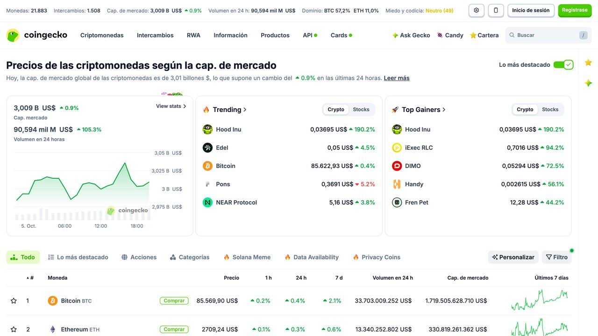
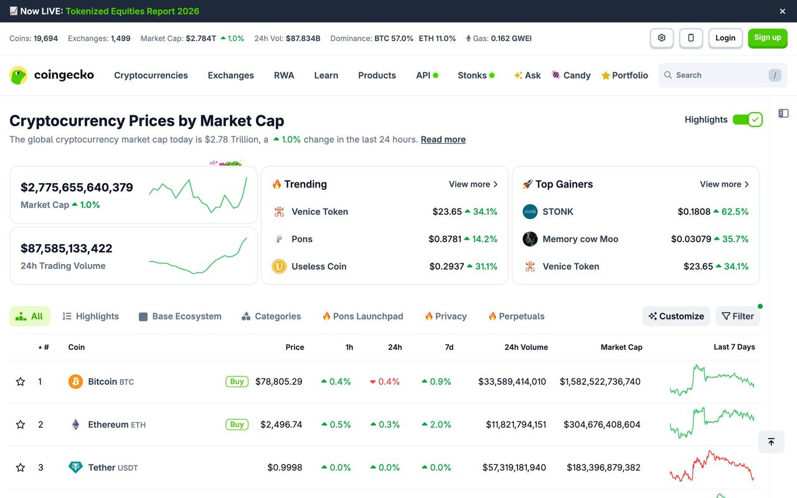
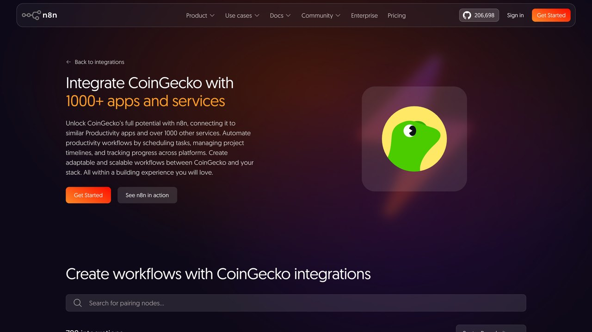

El agente que vigila cripto y te resume las noticias
Un precio suelto no dice nada. Esta guía monta un agente que cruza el precio en vivo de una criptomoneda con las noticias recientes que podrían explicarlo, y solo te avisa cuando ambas cosas coinciden en algo relevante.
Aviso importante: esta guía es un tutorial técnico de automatización, no asesoramiento financiero. Nada de lo que sigue es una recomendación de inversión, y el mercado de criptomonedas es de alta volatilidad y riesgo. El objetivo es aprender a construir agentes que cruzan fuentes de datos, usando cripto como ejemplo por lo fácil que es acceder a sus datos en vivo.
Revisar el precio de una criptomoneda cada pocos minutos, todo el día, es agotador y en la práctica imposible de mantener. Un agente puede hacer esa vigilancia por ti — pero un agente que solo mira el precio y te avisa de cada movimiento pequeño es tan inútil como no tener ninguno: generaría tantas alertas que dejarías de leerlas en la primera semana.
El diseño que de verdad funciona combina dos fuentes: el precio en vivo (con su variación en 24 horas) y las noticias recientes sobre ese activo. Solo cuando ambas coinciden —una variación de precio inusual junto con una noticia relevante que podría explicarla— el agente genera una alerta con las dos piezas de contexto juntas, en vez de un número aislado sin explicación.
Esta guía usa Bitcoin y Ethereum en los ejemplos porque son los activos con más liquidez y con las APIs de datos más maduras y fiables del sector, no porque sean necesariamente los más interesantes de vigilar. El mismo patrón de código funciona igual de bien con cualquier otro activo que CoinGecko cubra —y cubre varios miles—, cambiando únicamente el identificador de la moneda en la petición.
Precios en vivo, ahora mismo
Esta caja consulta en directo la API gratuita de CoinGecko, sin clave: vale para una consulta suelta como esta, pero no para un agente que se ejecuta solo (lo explicamos más abajo). Pulsa para ver el precio real de este instante.
Pulsa el botón para consultar api.coingecko.com en directo.

El diseño: dos fuentes, una sola alerta con sentido
Cada 30 min: consultar precio y variación 24h en CoinGecko ↓ ¿Variación > umbral definido (ej. ±5%)? ↓ Sí ↓ No consultar noticias recientes no hacer nada, esperar al siguiente ciclo ↓ IA redacta una alerta con precio + variación + resumen de noticias ↓ enviar a Telegram / correo / Slack
El umbral (±5% en el ejemplo) es la pieza que separa un agente útil de uno molesto. Fijarlo demasiado bajo genera alertas constantes por movimientos normales del mercado; fijarlo demasiado alto hace que te enteres tarde de algo relevante. El número correcto depende de la volatilidad histórica del activo concreto que vigiles — conviene revisar unas semanas de datos pasados antes de fijar un umbral definitivo, en vez de adivinarlo a ojo.
Un ejemplo concreto de por qué esto importa: Bitcoin puede moverse con normalidad entre un 2% y un 4% en un día cualquiera, sin que eso signifique nada en particular. Un umbral del 3% en ese activo generaría alertas casi a diario, la mayoría sin ninguna noticia real detrás — exactamente el ruido que este diseño intenta evitar. Un umbral del 6-8%, en cambio, filtra el ruido normal y solo dispara la alerta en movimientos que de verdad se salen de lo habitual para ese activo concreto. Cada criptomoneda tiene su propio rango de volatilidad "normal", así que el mismo umbral no sirve igual de bien para todas.
Antes de dejar el agente corriendo sin supervisión, es buena práctica probarlo primero en modo "solo registro": que anote cada vez que se dispararía la alerta sin enviarla de verdad, durante una o dos semanas. Revisar ese registro te dice si el umbral elegido genera un volumen de alertas razonable (unas pocas a la semana, no varias al día) antes de confiar en que el agente te avise solo de lo que de verdad importa.
Un caso real: de mirar el móvil cada hora a una alerta con sentido
Antes de automatizar nada, es habitual caer en el hábito de abrir la aplicación del exchange varias veces al día "por si acaso", sin ningún criterio objetivo detrás de cuándo mirar — puro reflejo ansioso, no una decisión informada. Ese patrón no solo consume tiempo y atención de forma difusa a lo largo del día, sino que expone a reaccionar de forma impulsiva ante cualquier movimiento, grande o pequeño, simplemente por haberlo visto en el peor momento.
El cambio real que trae este agente no es "ahorrar tiempo" en abstracto, es sustituir esa revisión constante y sin criterio por un puñado de alertas a la semana, cada una con contexto real detrás (precio, variación, noticia relacionada si existe). La diferencia psicológica es notable: se pasa de vigilar de forma pasiva y ansiosa a recibir información solo cuando de verdad hay algo que merece diez segundos de atención, y el resto del tiempo el móvil se queda callado.
Merece la pena remarcar otra vez la diferencia con un bot de trading automatizado, cubierto en nuestra guía sobre cómo se construye un bot de trading con IA: aquel ejecuta operaciones reales de compra y venta por sí solo, con dinero real en juego y una capa de riesgo y regulación mucho mayor. El agente de esta guía no toca tu dinero en ningún momento — solo lee información pública y te la resume. Esa diferencia no es un matiz menor: es la que determina si estás construyendo una herramienta de información personal o un sistema financiero con obligaciones regulatorias que varían según el país donde operes.

Montado con n8n, sin escribir código
Siguiendo el patrón de nuestra guía de n8n y IA, este flujo completo se monta con cuatro nodos visuales: un disparador programado (cada 30 minutos), un nodo HTTP Request apuntando a la API de CoinGecko, un nodo condicional (IF) que compara la variación contra tu umbral, y —solo si se cumple la condición— un nodo HTTP Request adicional a una API de noticias seguido de un nodo de IA que redacta la alerta final combinando ambas respuestas.
Por qué n8n encaja mejor aquí que un agente de chat:
Este flujo debe ejecutarse solo, cada 30 minutos, sin que nadie lo dispare — exactamente el caso donde n8n gana a pedírselo a un chatbot cada vez, como explicamos en la comparativa de esa misma guía.
El nodo de IA dentro de n8n recibe ambos resultados (el JSON del precio y el JSON de noticias) como variables del flujo, y tu instrucción es tan simple como: "Redacta una alerta breve en español explicando la variación de precio de {{criptomoneda}} usando estas noticias recientes como posible contexto: {{noticias}}. Si ninguna noticia parece relacionada, dilo explícitamente en vez de forzar una conexión." Esa última frase importa tanto como el resto: evita que el modelo invente una causa solo porque tú le pediste una explicación.
Montado paso a paso, el flujo completo en n8n queda así: primero el nodo "Schedule Trigger" configurado a cada 30 minutos; después un nodo "HTTP Request" con la URL de CoinGecko y los parámetros de la moneda que quieras vigilar; a continuación un nodo "IF" que compara el campo usd_24h_change de la respuesta contra tu umbral en valor absoluto; en la rama "verdadero" de ese IF, un segundo "HTTP Request" hacia tu API de noticias elegida; y por último el nodo de IA que redacta el mensaje, conectado a un nodo final de Telegram, Slack o correo para el envío. Seis nodos en total, ninguno de ellos con una sola línea de código.
La ventaja de construirlo así, frente al script de Python de la siguiente sección, es que cambiar el umbral, la moneda vigilada o el canal de aviso es editar un campo en un nodo visual, sin tocar código ni redesplegar nada — justo el tipo de ajuste que conviene poder hacer sin fricción cuando todavía estás calibrando qué umbral funciona bien para ti.
La misma lógica en código, si lo prefieres
import os, requests
UMBRAL = 5.0 # porcentaje
# Clave gratuita del plan Demo (cabecera oficial: x-cg-demo-api-key)
CABECERAS = {"x-cg-demo-api-key": os.environ["COINGECKO_API_KEY"]}
def revisar_cripto(moneda="bitcoin"):
precio = requests.get(
"https://api.coingecko.com/api/v3/simple/price",
params={"ids": moneda, "vs_currencies": "usd", "include_24hr_change": "true"},
headers=CABECERAS, timeout=15
).json()[moneda]
if abs(precio["usd_24h_change"]) < UMBRAL:
return None # movimiento normal, no hace falta alertar
noticias = requests.get(
"https://hn.algolia.com/api/v1/search",
params={"query": moneda, "tags": "story", "hitsPerPage": 3},
timeout=15
).json()["hits"]
return {"precio": precio, "noticias": [n["title"] for n in noticias]}
Este ejemplo usa la API de búsqueda de Hacker News (gratuita, sin clave) como fuente de noticias por simplicidad; en un caso real probablemente preferirías una API de noticias generalista como la mencionada en nuestra guía de APIs gratuitas para agentes, que cubre medios más amplios que solo tecnología. El resultado de esta función es exactamente el input que le pasarías al modelo de IA para redactar la alerta final, sea en un script Python o dentro de un nodo de n8n.
Para que este script corra solo, sin que tengas que ejecutarlo a mano cada vez, necesitas programarlo con una tarea periódica del propio sistema operativo (cron en Mac o Linux, el Programador de tareas en Windows) o desplegarlo en un servidor con su propio planificador. Es exactamente el mismo problema que resuelve n8n de forma más visual con su nodo "Schedule Trigger" — la diferencia entre las dos vías no es de capacidad, sino de cuánta infraestructura estás dispuesto a mantener tú mismo a cambio de más control sobre el código.
Riesgos que no puedes ignorar en este caso concreto
Olvidar los límites de peticiones al vigilar varios activos a la vez
La capa gratuita de CoinGecko tiene un límite de peticiones por minuto, y el acceso sin clave es todavía más estricto (detalle en la sección «Qué límites tiene CoinGecko hoy»). Si el agente vigila muchas criptomonedas distintas en el mismo ciclo, conviene agrupar la consulta en una sola llamada con varios identificadores (como en el ejemplo de la demo de esta guía) en vez de una petición separada por cada activo, que agota la cuota mucho antes.
Confundir un resumen con un consejo de inversión
El agente describe lo que pasó, no predice lo que pasará ni recomienda ninguna acción. Diseña el prompt del modelo para que nunca sugiera "comprar" o "vender", solo para que describa el hecho y el posible contexto.
Que el modelo invente una relación causal falsa
Si ninguna noticia real explica el movimiento de precio, un modelo mal instruido puede forzar una conexión con la noticia menos mala de las que encontró. La instrucción explícita de "di que no hay relación clara si no la hay" reduce mucho este riesgo, pero conviene revisar alertas reales de vez en cuando para confirmarlo.
Depender de una sola fuente de noticias sesgada o incompleta
Ninguna fuente única cubre todo el panorama informativo. Un agente que solo mira una fuente de noticias puede perderse la noticia relevante que sí explica el movimiento, simplemente porque no la publicó ese medio concreto.
No distinguir entre variación real y un error puntual de la API
Una API puede devolver un dato anómalo por un fallo temporal propio, no porque el mercado se haya movido de verdad. Antes de disparar una alerta basada en una única lectura, es más robusto confirmar el movimiento con una segunda consulta pasados unos segundos, para descartar que sea un error transitorio de la fuente.
Enviar la alerta por un canal que nadie revisa
De poco sirve un agente perfectamente calibrado si la alerta llega a un correo que revisas una vez a la semana. Elige el canal (Telegram, una notificación push, Slack) según con qué frecuencia realmente lo consultas, no según cuál sea más fácil de configurar técnicamente.
Qué límites tiene CoinGecko hoy (y por qué necesitas una clave)
Esto cambia con el tiempo, así que lo comprobamos en la documentación oficial el 17 de octubre de 2026. CoinGecko ofrece ahora dos puertas de entrada gratuitas, y no sirven para lo mismo:
| Acceso | Límite publicado | Para qué sirve |
|---|---|---|
| Sin clave ("keyless") | Compartido por IP, unas 10-30 llamadas por minuto según la carga del servidor | Probar una consulta o una demo. La propia documentación advierte de que no es adecuado para producción ni para sondeos programados |
| Plan Demo (gratis, con clave) | 100 llamadas por minuto y 10.000 créditos al mes, según su página de precios | Un agente personal que consulta cada 30 minutos |
| Planes de pago | Basic desde 35 $/mes (29 $/mes con pago anual); Analyst 129 $/mes | Productos comerciales o volumen alto |
Haz la cuenta de tu caso: consultar una vez cada 30 minutos son 48 llamadas al día, unas 1.440 al mes, muy por debajo de las 10.000 del plan Demo. Si vigilas diez monedas en una única llamada (el parámetro ids acepta varias separadas por comas), el coste sigue siendo una llamada por ciclo. Registra la clave en tu cuenta de CoinGecko y guárdala como variable de entorno o como credencial de n8n; nunca la pegues dentro del flujo ni en un repositorio.
Un detalle que conviene saber: según la documentación, todas las peticiones cuentan para el límite por minuto, también las que fallan. Si recibes un error 429 ("demasiadas peticiones"), espera y reintenta con una pausa creciente en vez de insistir en bucle. Fuentes: documentación del acceso sin clave, página de precios de la API y autenticación del plan Demo. Las cifras de límites por minuto del plan Demo aparecen con valores distintos en distintas páginas de CoinGecko; si tu agente va justo, mide tú mismo en lugar de fiarte de un número.
Cómo afinar el agente después de la primera semana
Una vez que el agente corre, el trabajo es calibrarlo. Una rutina sencilla que funciona:
- Guarda cada disparo (fecha, moneda, variación, titulares encontrados) en una hoja de cálculo o en una tabla de n8n.
- Marca cada alerta como "útil" o "ruido" durante dos semanas. Si más de la mitad es ruido, sube el umbral o exige que haya noticia relacionada.
- Prueba una segunda condición: además de la variación en 24 horas, compara con la variación de la última hora para distinguir un movimiento sostenido de un pico puntual.
- Limita las alertas: como máximo una por moneda cada varias horas, para que un día volátil no te inunde el móvil.
- Pon un tope de gasto al nodo de IA si usas un modelo de pago; en nuestra guía de límites de gasto para agentes tienes cómo hacerlo.
Y recuerda que las noticias que el agente trae son texto de terceros: un titular puede contener instrucciones disfrazadas dirigidas al modelo. Trata ese contenido como datos, no como órdenes, según lo explicado en la guía de prompt injection en agentes.
Una nota sobre regulación en España
El agente de esta guía solo lee información pública, así que no necesita autorización de ningún supervisor. Otra cosa son las plataformas donde compras: según el régimen europeo de criptoactivos (MiCA), solo pueden prestar servicios en España las que cuentan con autorización. La CNMV comunicó que el periodo transitorio para las entidades que ya operaban terminaba el 1 de julio de 2026 y recomienda comprobar en los registros de ESMA y de la CNMV si tu proveedor está autorizado antes de depositar dinero. Esta referencia procede de la prensa económica y de despachos jurídicos que citan el documento de preguntas y respuestas de la CNMV; para decidir, consulta el registro oficial en cnmv.es.